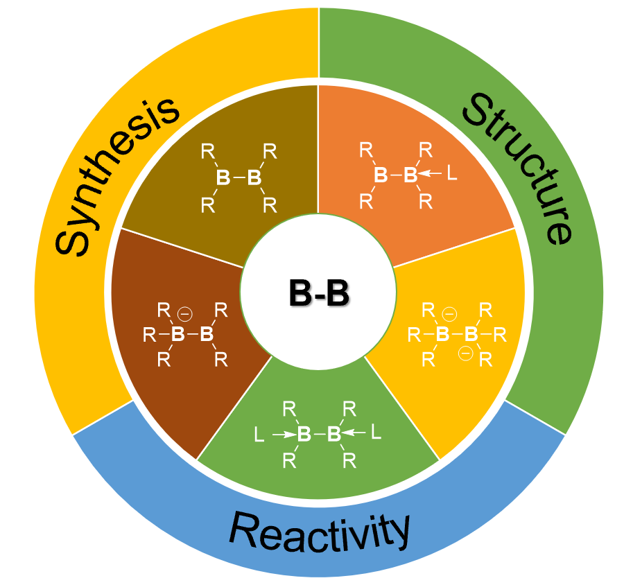
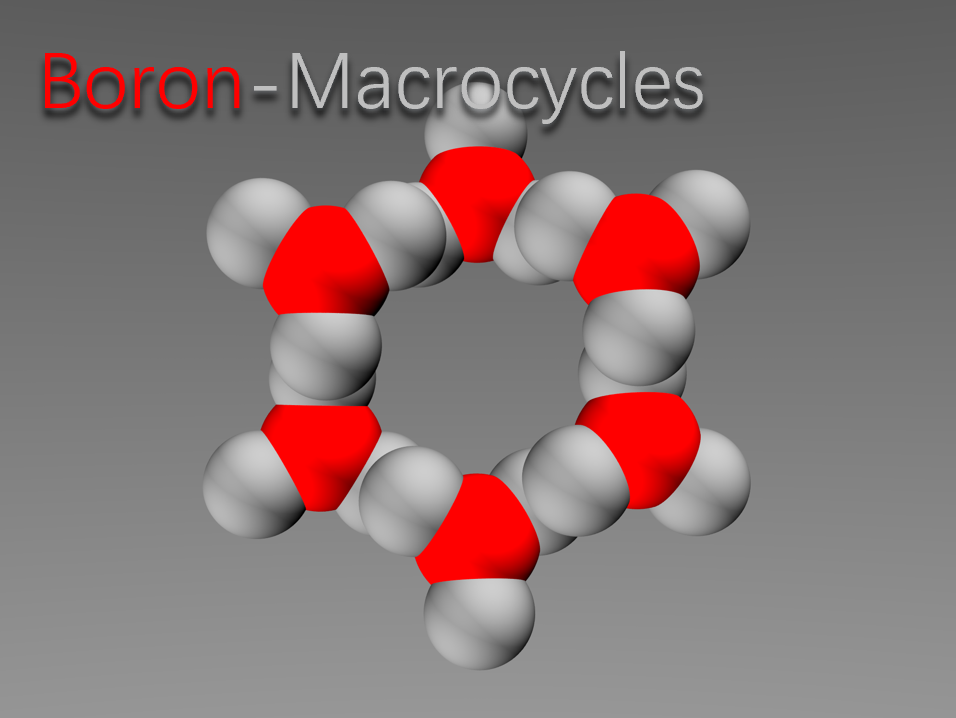

At CityU
30. G.Xu, H.T. Chan, S. Li, T.Y. Wong, L. Zhang, Q. Zhang, Z. Lin and Z. Lu. A zinc boryl compound unlocks diverse reactivity pathways beyond nucleophilic borylation. Nat. Commun, 2025, 16, 6349.
29. W. Guo, Y. Wu, C. Xie, X. Tan, Z. Lu, H. Li. Covalent Au–C Contact Formation and C–C Homocoupling Reaction from Organotin Compounds in Single-Molecule Junctions. J. Am. Chem. Soc., 2024,146, 39, 26687–26693.
28. J. Zou, D. Zhang, Q. H. Thi, W. Chen, G. Xu, Z. Lu, T. H. Ly, J. Luo. Exploring Favorable Supramolecular Interactions of Multifluorinated Aromatics in Dendronized Push-Pull Chromophores for Electro-Optics . ChemPlusChem, 2024, e202400320.
27. X. Ren, H. Li, H. Peng, Y. Yang, H. Su, C. Huang, X. Wang, J. Zhang, Z. Liu, W. Wei, K. Cheng, T. Zhu, Z. Lu, Z. Li, Q. Zhao, B. Z. Tang, S. Q. Yao, X. Song, H. Sun. Reactivity-Tunable Fluorescent Platform for Selective and Biocompatible Modification of Cysteine or Lysine. Adv. Sci, 2024, 11,2402838.
26. Y. Wang, C. Wei, B. Xu, F. Li, Q. Luo, N. Qing, Z. Lu, L. Tang. Enzyme initiated in situ gelation as an oxygen-tolerant, high adhesive, and versatile strategy for hydrogel coating preparation. Chem. Eng. J, 2024, 493, 152362.
25. S. Li, F. Shiri, G. Xu, K.S.M. Yiu, H. K. Lee, T. H. Ng, Z. Lin and Z. Lu. Reactivity of A hexaaryldiboron(6) Dianion as Boryl Radical Anions. J. Am. Chem. Soc., 2024, 146,17348-17354.
24. C. Wei, Y. Wang, Y. Liang, J. Wu, F.Li, Q. luo, Y. Lu, C. Liu, R. Zhang, Z. Lu, B. Xu, N. Qing, L. Tang. Low-hysteresis and highly linear sensors based on environmentally stable, adhesive, and antibacterial hydrogels. J. Mater. Chem. A, 2024, Advance Article.
23. H. Li, J. Yao, G. Xu, K.S.M. Yiu, C. Siu, Z. Wang, Y. Peng, Y. Xie, Y. Wang, Z. Lu. Reduction of Li+ within A Borate Anion. Nat. Commun., 2024, 15, 2590.
(Highlighted in Communications Chemistry.)
22. X. Mao, Z. Lu, J. Zhang, Z. Xie. Catalyst-Free Regioselective Diborylation of Aryllithium with Tetra(o-tolyl)diborane(4). Angew. Chem. Int. Ed. 2023, 63, e202317614.
21. H. Li, G. Xu, S. Li, Y. Wu, Z.Lu. Neutral and Anionic Diboron Compounds Bearing Electron-Precise B−B Bond. Chem. Rec. 2023, 23, e202300238. (invited contribution)

20. Y. Wu, S. Li, H. Li, R. Ye, Z. Lu. Synthesis, structure, and application of boron-containing macrocycles. J. Mater. Chem. C 2023, 11, 7144-7158. (invited contribution, emerging investigator 2023)

19. R. Wang, C. Lee, Z. Lu. Recent development of three-coordinated boron-doped aromatics for optoelectronic applications. J. Organomet. Chem. 2023, 984, 122564. (invited contribution)
Before joining CityU
18. X. Mao, J. Zhang, Z. Lu, Z. Xie. A (µ-Hydrido)diborane(4) Anion and Its Coordination Chemistry with Coinage Metals. Chem Sci, 2022, 13, 3009-3013.
17. H. Ni, Z. Lu, Z. Xie. Light-enabled alkenylation of iodocarboranes with unactivated alkenes, Dalton Trans. 2022, 51, 104-110.
16. M. Zhong, J. Zhang, Z. Lu, Z. Xie. Diboration of Alkenes and Alkynes with a Carborane-Fused Four-Membered Boracycle Bearing an Electron-Precise B-B Bond. Dalton Trans. 2021, 50, 17150-17155.
15. T. Chan, Z. Lu, Z. Xie, Synthesis and structure of metallacarboranes bearing carborane-fused cyclopentenyl and dicarbollyl-fused cyclopentene ligands. Dalton Trans. 2021, 50, 10615-10620.
14. H. Ni, Z. Lu, Z. Xie. Light-Promoted Copper-Catalyzed Cage C-Arylation of o-Carboranes: Facile Synthesis of 1-Aryl-o-Carborane and o-Carborane-Fused Cyclics. New J. Chem., 2021, 45, 14944-14948.
13. H. Ni, Z. Lu, Z. Xie. Transition-Metal-Free Cross-Coupling Reaction of Iodocarboranes with Terminal Alkynes Enabled by UV Light: Synthesis of 1‑Alkynyl‑o‑Carboranes and Carborane-Fused Cyclics. J. Am. Chem. Soc. 2020, 142, 18661-18667.
12. Z. Lu, T. K. Ronson, J. R. Nitschke. Reversible reduction drives anion ejection and C60 binding within an FeII4L6 cage. Chem. Sci., 2020, 11, 1097-1101.
11. Z. Lu, R. Lavendomme, O. Burghaus, J. R. Nitschke. A Zn4L6 Capsule with Enhanced Catalytic C−C Bond Formation Activity upon C60 Binding. Angew. Chem. Int. Ed. 2019, 58, 9073-9077.
10. Z. Lu, H. Quanz, J. Ruhl, G. Albrecht, C. Logemann, D. Schlettwein, P. R. Schreiner, H. A. Wegner. Control of excited state conformation in B,N-acenes. Angew. Chem. Int. Ed. 2019, 58, 4259-4263.
9. L. Hong, S. Ahles, A. H. Heindl, G. Tiétcha, A. Petrov, Z. Lu, C. Logemann, H. A. Wegner. An air-stable bisboron complex: a practical bidentate Lewis acid catalyst. Beilstein J. Org. Chem. 2018, 14, 618-625.
8. Z. Lu, H. Quanz, O. Burghaus, J. Hofmann, C. Logemann, S. Beeck, P. R. Schreiner, H. A. Wegner. Stable Organic Neutral Diradical via Reversible Coordination. J. Am. Chem. Soc. 2017, 139, 18488-18491.
7. Z. Lu, L. Schweighauser, H. Hausmann, H. A. Wegner. Metal-Free Ammonia-Borane Dehydrogenation Catalysed by a Bis(borane) Lewis Acid. Angew. Chem. Int. Ed. 2015, 54, 15556 -15559.
6. Z. Lu, H. Hausmann, S. Becker, H. A. Wegner. Aromaticity as Stabilizing Element in the Bidentate Activation for the Catalytic Reduction of Carbon Dioxide. J. Am. Chem. Soc. 2015, 137, 5332-5335.
5. Z. Lu, Y. Wang, J. Liu, Y. Lin, Z. H. Li, H. Wang. Synthesis and Reactivity of the CO2 Adducts of Amine/Bis(2,4,6-tris(trifluoromethyl)phenyl)borane Pairs. Organometallics 2013, 32, 6753-6758.
4. Y. Wang, W. Chen, Z. Lu, Z. H. Li, H. Wang. Metal-Free HB(C6F5)2-Catalyzed Hydrogenation of Unfunctionalized Olefins and Mechanism Study of Borane-Mediated σ-Bond. Angew. Chem. Int. Ed. 2013, 52, 7496-7499.
3. Z. Lu, H. Ye, H. Wang. New Organoboranes in Frustrated Lewis Pair Chemistry. Top. Curr. Chem. 2013, 334, 59-80.
2. H. Ye, Z. Lu, D. You, Z. Chen, Z. H. Li, H. Wang. Frustrated Lewis Pair Induced Boroauration of Terminal Alkynes. Angew. Chem. Int. Ed. 2012, 51, 12047-12050.
1. Z. Lu, Z. Cheng, Z. Chen, L. Weng, Z. H. Li, H. Wang. Heterolytic Cleavage of Dihydrogen by Frustrated Lewis Pairs Comprised of Bis(2,4,6-tris(trifluoromethyl)phenyl)-borane and Amines: Stepwise versus Concerted Mechanism. Angew. Chem. Int. Ed. 2011, 50, 12227-12231.